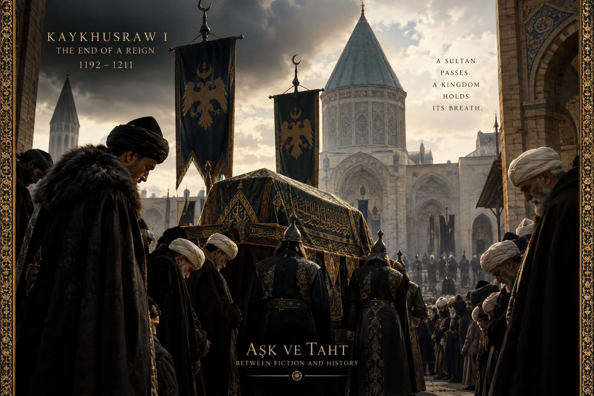
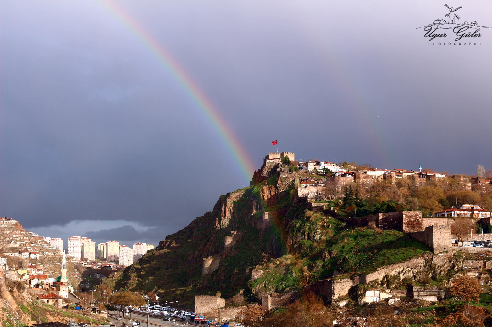
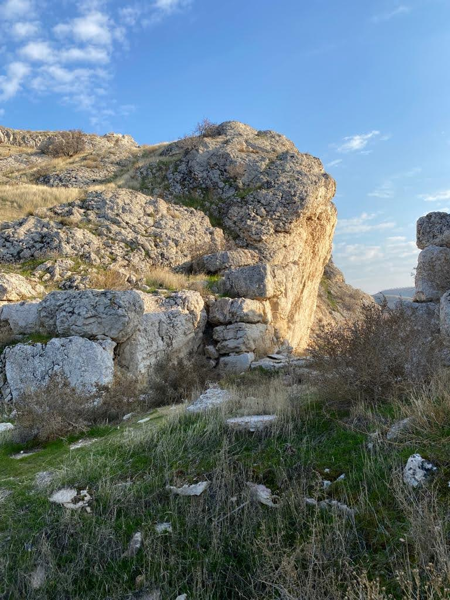
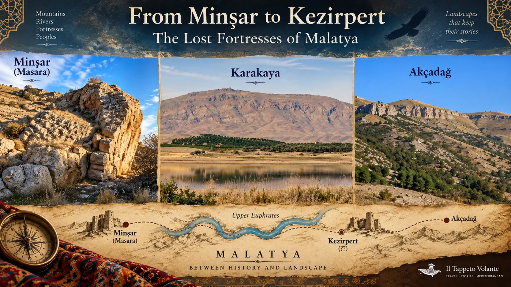
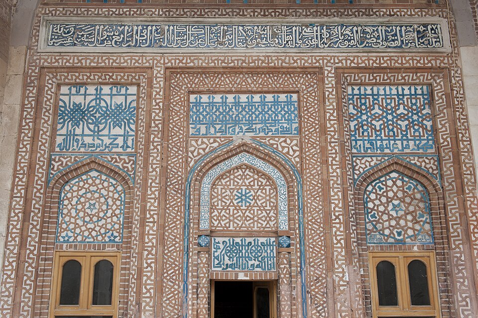
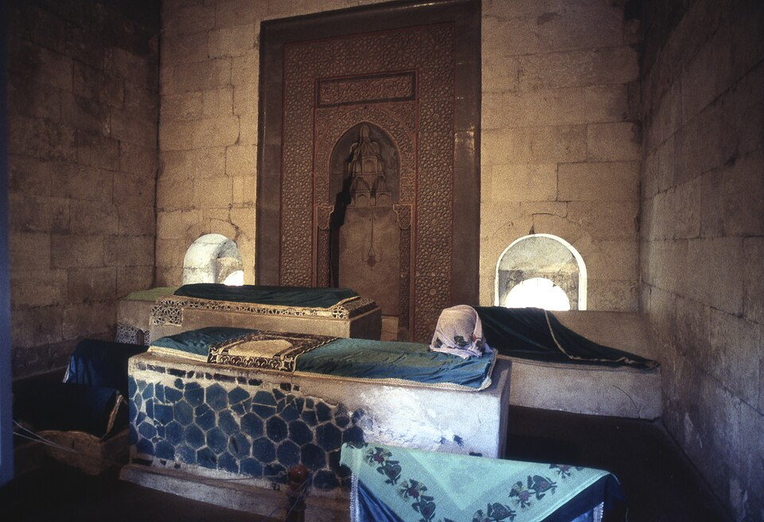
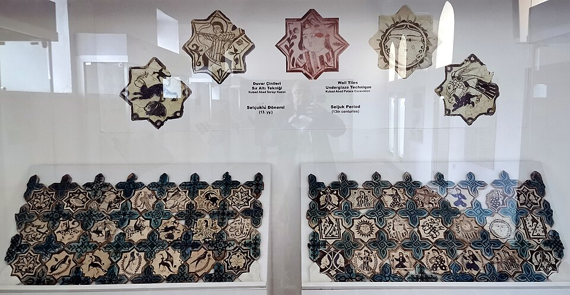
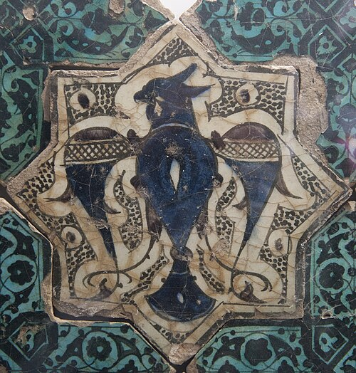
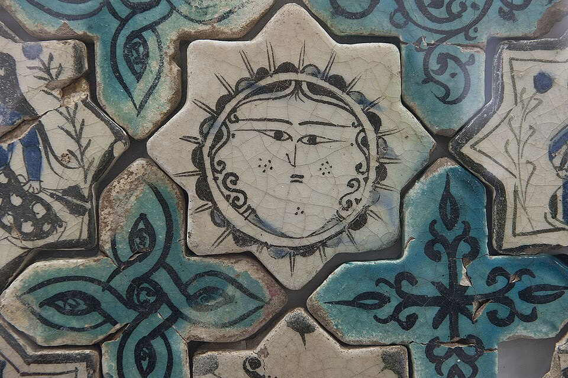
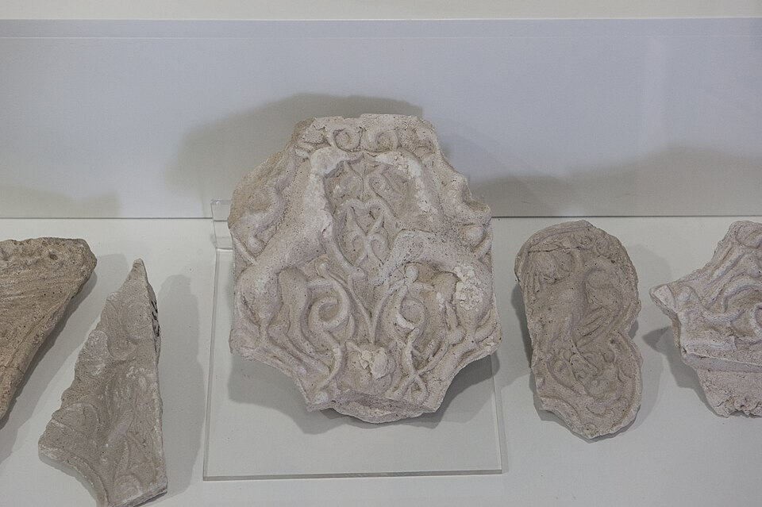

Cuando Aşk ve Taht comienza, Alaeddin Keykubad está saliendo de años de cautiverio. Pero la historia que lo llevó tras los muros de una fortaleza había comenzado mucho antes de que se abrieran las puertas de su prisión.
1211
Muere un sultán

Recreación histórica evocadora realizada con ayuda de la IA. La escena no reconstruye ninguna ceremonia funeraria documentada.
El sultán Kaykhusraw I murió en 1211 después de la batalla de Alaşehir. Su muerte abrió de inmediato la cuestión sucesoria en el Sultanato selyúcida de Rum.
Los dignatarios del Estado eligieron a su hijo mayor, Izzeddin Kaykaus, entonces melik de Malatya. Fue convocado y entronizado en Kayseri. Su hermano menor Alaeddin Keykubad, melik de Tokat, se negó a aceptar la decisión.
Hermano contra hermano
Alaeddin se alió con Levon II de la Armenia cilicia y con su tío Mughith al-Din Tughril Shah, melik de Erzurum, y avanzó contra Kayseri. La alianza no perduró: Levon se retiró tras negociar con el bando de Kaykaus, mientras Tughril Shah regresó a Erzurum.
Sin apoyo suficiente, Alaeddin abandonó el asedio y se retiró al castillo de Ankara.
1212
Ankara — El trono estaba perdido

Ankara Kalesi — Uğur Güler (Ugur0641), Wikimedia Commons, CC BY-SA 4.0.
Kaykaus sitió el castillo de Ankara. Cuando comenzaron a escasear las provisiones, Alaeddin aceptó rendirse con la condición de que ni él ni los habitantes de Ankara sufrieran daño.
Había luchado por el trono. Ahora era prisionero de su propio hermano.
El camino hacia Minşar
Tras la rendición, Alaeddin fue conducido al este y encarcelado en el castillo de Minşar, cerca de Malatya. Las fuentes conservan también un episodio más sombrío: Kaykaus quiso matar a su hermano, pero su maestro Mecdüddin Ishak lo impidió.

Castillo de Masara (también llamado Muşar Kalesi) — fotografía de Engin Örüm, 2022. Fuente: Kültür Envanteri. CC BY-NC-ND 4.0. Imagen presentada sin alteraciones.
La fotografía documenta el paisaje y las ruinas identificadas como Masara/Muşar. No debe interpretarse como una reconstrucción del cautiverio de Alaeddin.
De Minşar a Kezirpert

Il Tappeto Volante — lámina geográfica narrativa. Kezirpert aparece deliberadamente con signos de interrogación porque no se ha establecido con seguridad su ubicación moderna.
Tradiciones posteriores y reconstrucciones modernas sitúan el cautiverio de Alaeddin primero en Minşar y después en Kezirpert. La identificación exacta de Kezirpert en el paisaje actual sigue siendo incierta; por eso, el mapa muestra su posición como una cuestión histórica, no como un emplazamiento arqueológico establecido.
1220
Se abren las puertas de la prisión
Cuando Izzeddin Kaykaus murió en 1220, Alaeddin recuperó la libertad. Fue proclamado soberano en Sivas y más tarde llegó a Konya, donde se celebró de nuevo su subida al trono.
Ocho años después de perder la lucha por el trono, el prisionero se convirtió en el sultán Alaeddin Keykubad I.
Aquí es donde el recorrido histórico se encuentra con el mundo inicial de Aşk ve Taht.
La serie combina personas documentadas y tensiones políticas reales con escenas inventadas, cronología condensada y relaciones dramatizadas. Las cuatro preguntas siguientes distinguen lo que muestra el episodio 1 de lo que las fuentes consultadas permiten establecer.
Derecho al trono
Celaleddin — ¿Quién tenía derecho a reinar?
En la serie: Celaleddin se indigna porque los emires eligen a un hermano que ha pasado ocho años cautivo y cree que el trono le correspondía a él.
En la historia: Celâleddin Keyferidun fue un príncipe selyúcida real y hermano de Alaeddin. Las fuentes consultadas no documentan, sin embargo, el enfrentamiento y las palabras concretas del episodio 1.
Por ello, no consideramos esa reivindicación dramática como un discurso o hecho histórico documentado.
Traición
Ümmühan y Ayaba
En la serie: Alaeddin cree que su madre Ümmühan Hatun y el atabeg Ayaba lo traicionaron y fueron responsables de su encarcelamiento.
En la historia: las fuentes consultadas explican su prisión por el fracaso en la lucha sucesoria, el sitio de Ankara y la rendición de 1212. No documentan una traición materna como causa.
El caso de Ayaba es diferente: Seyfeddin Ay-aba fue un emir real y muy poderoso. Más tarde, en 1223, figuró entre los emires implicados en el violento enfrentamiento político de Alaeddin con la vieja élite militar.
Cronología
La emboscada — ¿Una historia trasladada hacia atrás en el tiempo?
En la serie: Celaleddin y Arakel organizan una emboscada contra Alaeddin, recién entronizado.
En las fuentes consultadas: no hemos encontrado testimonios de esta emboscada de 1220. Sí está documentada, en cambio, una crisis posterior, en 1223: emires poderosos conspiraron para derrocar a Alaeddin y sustituirlo por su hermano Celâleddin Keyferidun. Seyfeddin Ay-aba figuró entre los emires arrestados.
Aşk ve Taht comienza con la subida al trono de Alaeddin en 1220, pero la serie no implica necesariamente que todos los hechos posteriores ocurran de inmediato. Algunos episodios históricos de sus primeros años de reinado podrían condensarse o reordenarse en la narración.
La mujer misteriosa
La mujer que recordaba
En la serie: años antes de ser encarcelado, una joven misteriosa salvó la vida de Alaeddin y permaneció en su recuerdo durante todo el cautiverio. Al final del episodio 1, una arquera enmascarada lo hiere en el hombro, huye y es perseguida hasta el borde de un precipicio.
Alaeddin reconoce a la mujer cuyos ojos recordó durante años, pero aún desconoce toda la verdad sobre su identidad.
En la historia: las fuentes consultadas no documentan ese encuentro anterior al cautiverio, la flecha ni la persecución. Por tanto, consideramos estas escenas parte del relato dramático de la serie, salvo que aparezcan nuevas pruebas.
atv — resumen oficial del episodio 1: versión televisiva del cautiverio de Alaeddin, Celaleddin, Ayaba, Ümmühan, la emboscada y la mujer misteriosa.
Las conclusiones históricas de esta página se limitan a lo que respaldan las fuentes citadas. Cuando son inciertas la identificación, la cronología o la causalidad, se señala expresamente.
Dónde nos deja el episodio 1
Alaeddin sobrevivió a una lucha por el trono, a años de cautiverio y al regreso al poder.
Pero el trono no acaba con la lucha. Da comienzo a otra.
Episodio 2 — próximamente
Sivas · 1220
Donde el prisionero llegó a ser sultán
Cuando Izzeddin Kaykaus I murió en 1220, los principales hombres del Estado selyúcida se reunieron en Sivas para decidir quién lo sucedería.
Su elección recayó en el hermano cautivo: Alaeddin Keykubad.
Tras años de cautiverio, Alaeddin fue liberado y proclamado sultán en Sivas. Más tarde viajaría a Konya, capital del Sultanato de Rum, donde se celebró de nuevo su subida al trono con una gran ceremonia.
El monumento que aún recuerda a su hermano
Sivas conserva un testimonio extraordinario de aquella transición dinástica.
En 1217, apenas tres años antes de morir, Kaykaus había encargado la Şifaiye, un gran hospital y complejo médico selyúcida.

Mausoleo de Izzeddin Kaykaus I, Şifaiye Medrese, Sivas — fotografía de Dosseman, Wikimedia Commons, CC BY-SA 4.0.
El mausoleo, ricamente decorado e integrado en el complejo, se convirtió en lugar de sepultura de Izzeddin Kaykaus I. Sus ladrillos, azulejos turquesa, motivos geométricos e inscripciones monumentales conservan el lenguaje visual del mundo selyúcida en el que Alaeddin alcanzó el poder.

Cenotafios del mausoleo, fotografiados antes de la restauración — Dosseman, Wikimedia Commons, CC BY-SA 4.0.
Aquí perdura el entorno funerario del sultán cuya muerte abrió el camino al gobierno de su hermano cautivo.
UN SULTÁN FUE SEPULTADO. SU HERMANO PRISIONERO FUE ELEVADO AL TRONO.
Lo que sabemos — y lo que ignoramos: las fuentes identifican Sivas como la ciudad donde Alaeddin Keykubad fue proclamado sultán, pero no determinan con seguridad el edificio exacto en que tuvo lugar la proclamación. La Şifaiye aparece aquí como monumento conservado, directamente vinculado a Kaykaus y a la transición dinástica, no como escenario documentado de la entronización de Alaeddin.
Beyşehir · el reinado de Alaeddin
Kubâdâbâd — Dentro del verdadero palacio del sultán
Los interiores palaciegos de Aşk ve Taht evocan una corte selyúcida. Pero ¿qué puede decirnos la arqueología sobre los edificios en los que realmente vivió Alaeddin Keykubad?
En la ribera suroccidental del lago Beyşehir, al oeste de Konya, el sultán encargó Kubâdâbâd, un conjunto palaciego a orillas del lago cuya construcción comenzó hacia 1226. Pertenece a la etapa posterior de su reinado y no a los hechos de su entronización en 1220.
Las excavaciones revelaron un Palacio Grande, una residencia menor, patios y otras estructuras. Un iwánaxial, asociado con el área de recepción o del trono, ayuda a comprender la disposición de los espacios ceremoniales de la corte. Sobre todo, la decoración conservada devuelve la vida al palacio.
Un palacio reconstruido en el museo

Exposición de azulejos hallados en Kubâdâbâd, Museo de Cerámica Karatay, Konya. Fotografía: Murat Özsoy 1958, Wikimedia Commons, CC BY-SA 4.0. Se trata de una exhibición museística, no de una pared palaciega conservada intacta.
Azulejos figurativos en forma de estrella alternaban con otros turquesa cruciformes para cubrir los muros. Personas, animales y seres fantásticos daban a las estancias mucho más color del que sugieren sus actuales ruinas de piedra.
El águila bicéfala

Azulejo con águila bicéfala de Kubâdâbâd, Museo de Cerámica Karatay. Fotografía: Dosseman, Wikimedia Commons, CC BY-SA 4.0.
El águila bicéfala aparece en la iconografía regia selyúcida. Aquí sobrevive en un azulejo vidriado del propio palacio del sultán: un objeto arqueológico, no un traje o decorado moderno, que nos acerca a su universo visual.
Un sol de rostro humano

Motivo de rostro humano semejante al sol entre los azulejos de Kubâdâbâd, Museo de Cerámica Karatay. Fotografía: Dosseman, Wikimedia Commons, CC BY-SA 4.0. Se describe aquí el aspecto del motivo; su simbolismo preciso no queda establecido por el registro fotográfico.
Entre los motivos geométricos turquesa aparece un rostro rodeado de rayos. Su sorprendente aspecto solar recuerda que la decoración de la corte selyúcida no se limitaba a las formas abstractas.
Más allá de los azulejos — Estucos arquitectónicos

Fragmentos de estuco ornamental procedentes de Kubâdâbâd, Museo de Cerámica Karatay. Fotografía: Dosseman, Wikimedia Commons, CC BY-SA 4.0.
Los fragmentos de estuco tallado añaden otra dimensión a la decoración palaciega. Conservan ornamentos en relieve, aunque estas fotografías no permiten establecer si cada pieza perteneció originalmente a una pared, un arco o un techo.
LA SERIE NOS MUESTRA UN PALACIO SELYÚCIDA. LA ARQUEOLOGÍA NOS PERMITE VER EL MUNDO DEL SULTÁN.
Ficción ↔ Historia: Kubâdâbâd es un palacio real encargado por Alaeddin Keykubad junto al lago Beyşehir. No es no el palacio de Konya representado en la serie, ni existía cuando Alaeddin subió al trono en 1220. Los objetos fotografiados son piezas arqueológicas exhibidas en un museo; su disposición original no puede deducirse de ese montaje.